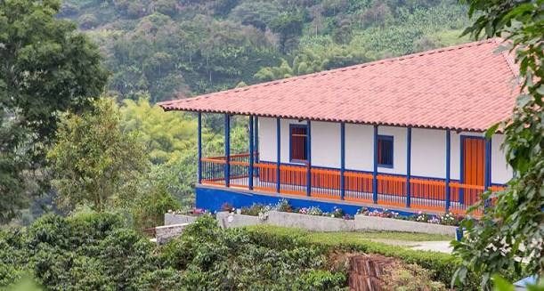
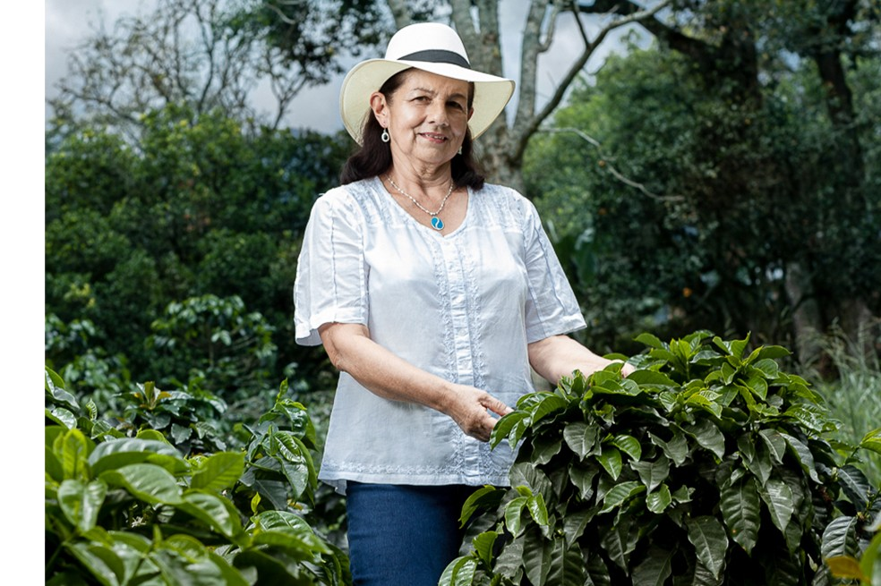
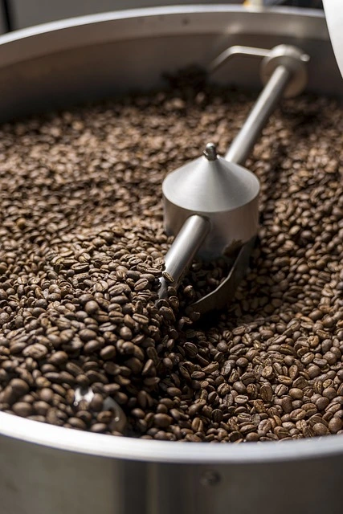

Manifiesto & Curaduría · Valkia Coffee
Cafés de autor, seleccionados para ti.
Somos un mercado independiente dedicado a descubrir, evaluar y llevar directamente a tu hogar los lotes de café más singulares y expresivos.

Conectamos el origen con tu paladar.
Detrás de cada paquete de café Valkia hay un caficultor apasionado y un tostador experto. Evaluamos la trazabilidad, el puntaje de cata en taza (+85 pts) y el impacto social antes de integrar cualquier lote a nuestro catálogo.
Comercio directo garantizando precios justos a los caficultores
Puntaje mínimo en escala SCAA para todos nuestros lotes
Tostión en pequeños lotes para cuidar la complejidad aromática
Empaques con válvula desgasificadora y materiales reciclables

"Trabajar con Valkia Coffee nos permite mostrarle al mundo el fruto de meses de trabajo en la montaña, recibiendo una compensación justa por la calidad de nuestro grano."
Rosa Elena Martínez — Caficultora de Café de Autor Aliado
El Criterio de Selección Valkia
Garantizamos excelencia en cada etapa del camino.

Catación en Finca
Probamos muestras directamente en el origen para asegurar perfiles aromáticos excepcionales.
Curaduría de Procesos
Elegimos variedades con fermentaciones controladas (Lavado, Honey, Anaeróbico y Natural).
Perfil de Tostión
Tostamos según las curvas ideales para realzar la acidez noble o el cuerpo según la variedad.
Entrega Fresca
Despachamos tu pedido en días de tostión reciente para garantizar una experiencia en taza perfecta.